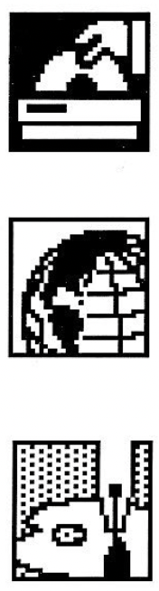
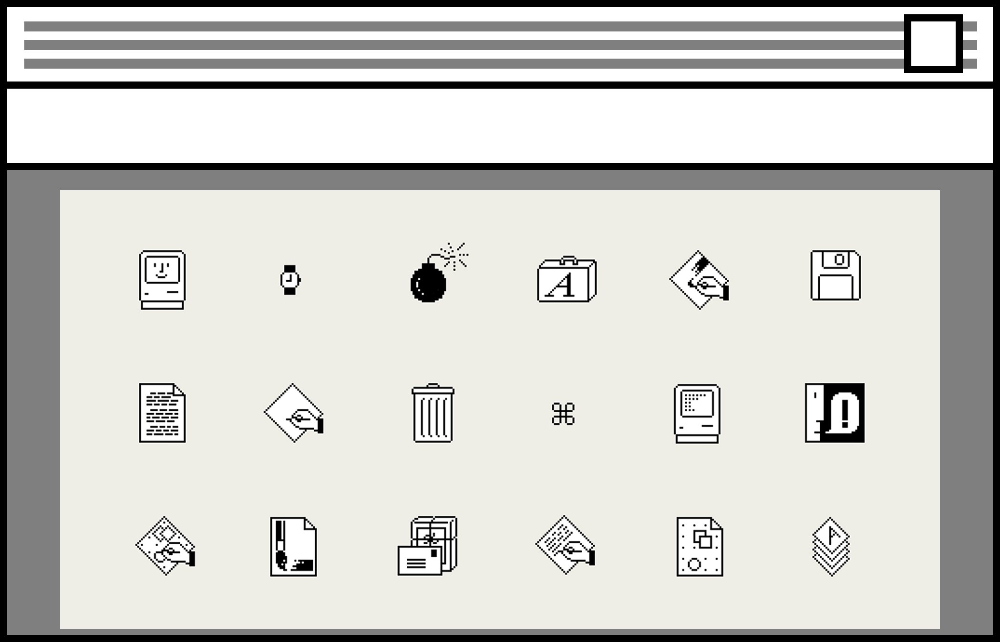
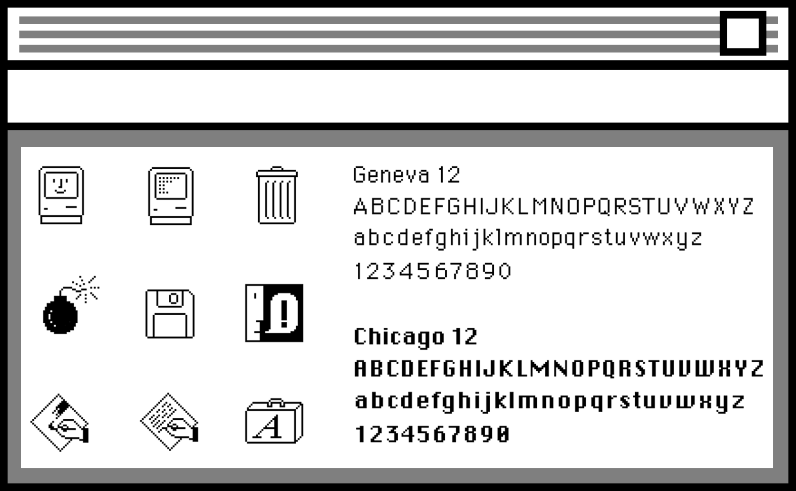
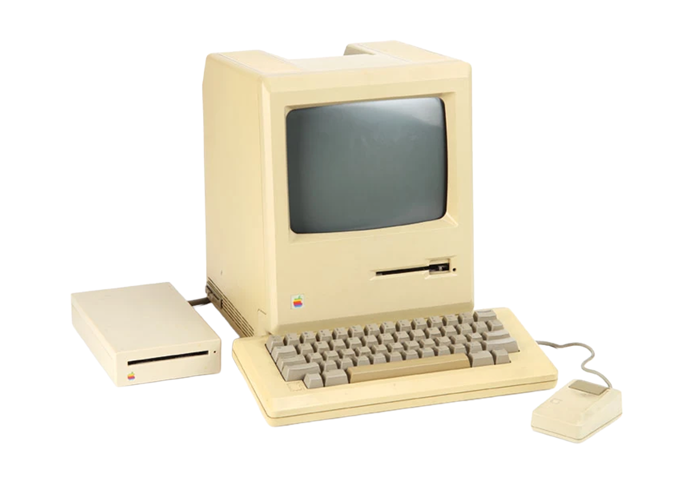

About The Artist
Susan Kare is an influential artist and designer who, since 1983, has created thousands of software icons that communicate function immediately and memorably.

Approached by Andy Hertzfeld in 1982, she was tasked with making home computers accessible, requiring a visual language the average person could use.
Although she lacked technical training, and was confined to a 32x32 canvas, she was able to develop icons that had personality and were approachable. Her creations have held longevity as many of her designs are still used in applications today.


Susan designed Geneva, and most notably the classic Chicago typeface, which was a part of Apple’s brand identity until 1997 and became a staple of the brand’s look. She revolutionized human and computer interaction with the emphasis on compre- hension making technology easy to use.
